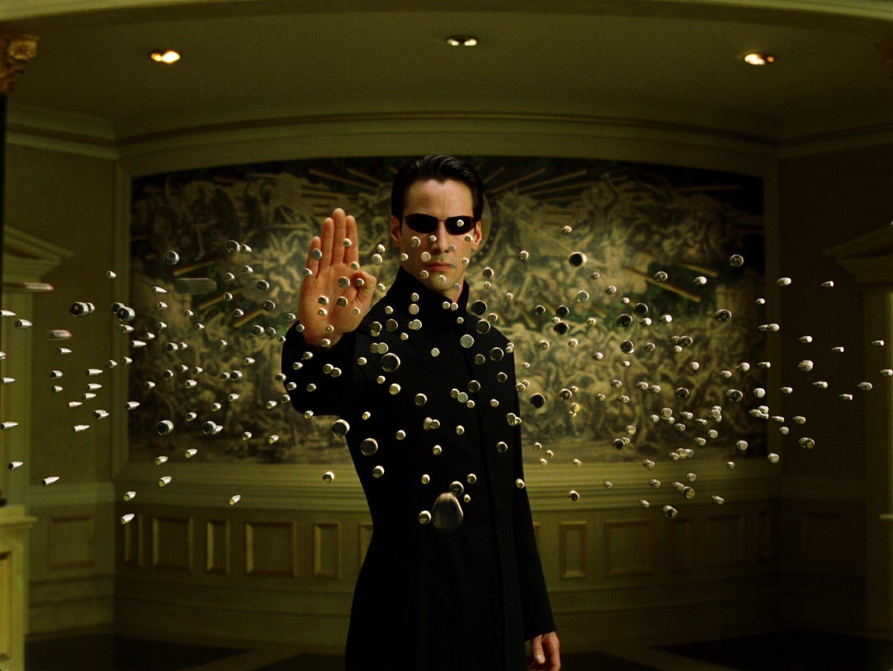
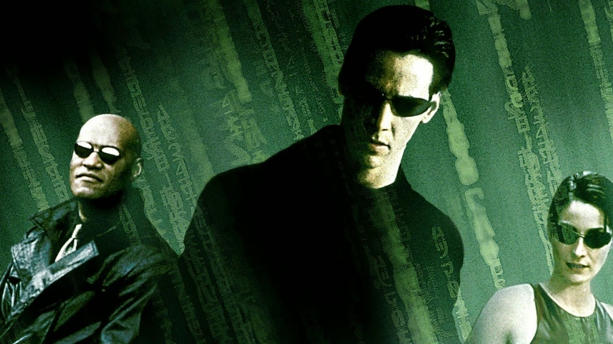
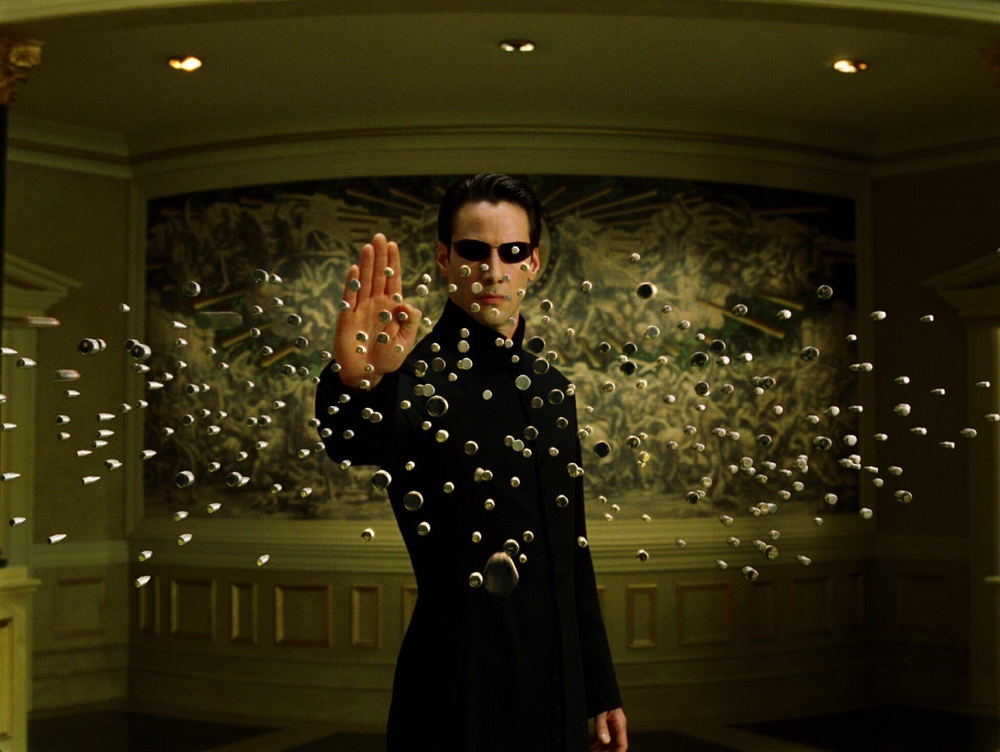
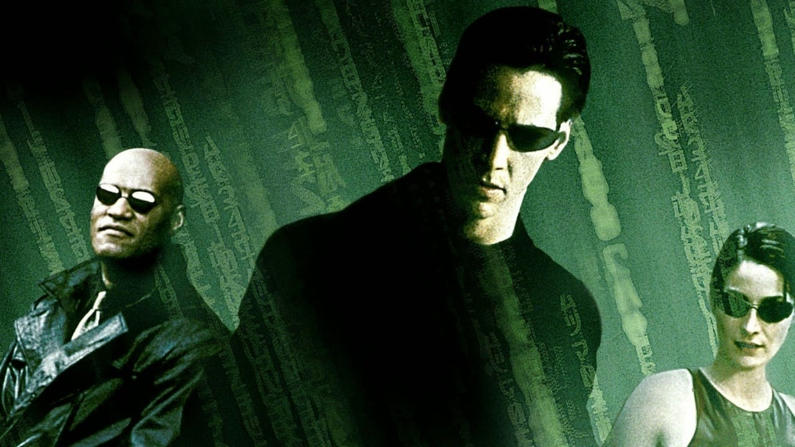

"The Matrix" é um filme de ficção científica lançado em 1999, que apresenta a história de Neo, um programador de computador que descobre que sua vida é uma ilusão criada por máquinas para controlar a humanidade. Ele se une a um grupo de rebeldes liderados por Morpheus e Trinity para combater as máquinas e libertar a humanidade.
A história começa com "The Matrix", onde Thomas Anderson, também conhecido como Neo, é um programador de computador que descobre que sua realidade é uma simulação criada por máquinas para manter os seres humanos sob controle. Ele se une a um grupo de rebeldes liderados por Morpheus e Trinity para lutar contra as máquinas e libertar a humanidade.
Em "The Matrix Reloaded", Neo descobre que sua missão é salvar Zion, a última cidade humana, da destruição pelas máquinas. Enquanto isso, os agentes da Matrix estão cada vez mais poderosos e determinados a capturá-lo.
Finalmente, em "The Matrix Revolutions", Neo e seus aliados fazem uma última tentativa de derrotar as máquinas e salvar a humanidade. A batalha final ocorre em várias frentes, dentro e fora da Matrix.
A trilogia aborda temas como a natureza da realidade, a liberdade, a escolha e a identidade. Com sua ação intensa, efeitos visuais inovadores e filosofia intrigante, "The Matrix" continua sendo um clássico da ficção científica e um marco da cultura pop.
"The Matrix" é um filme de ficção científica lançado em 1999, que apresenta a história de Neo, um programador de computador que descobre que sua vida é uma ilusão criada por máquinas para controlar a humanidade. Ele se une a um grupo de rebeldes liderados por Morpheus e Trinity para combater as máquinas e libertar a humanidade.